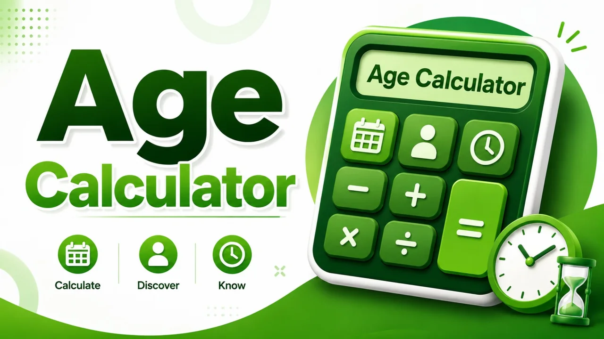
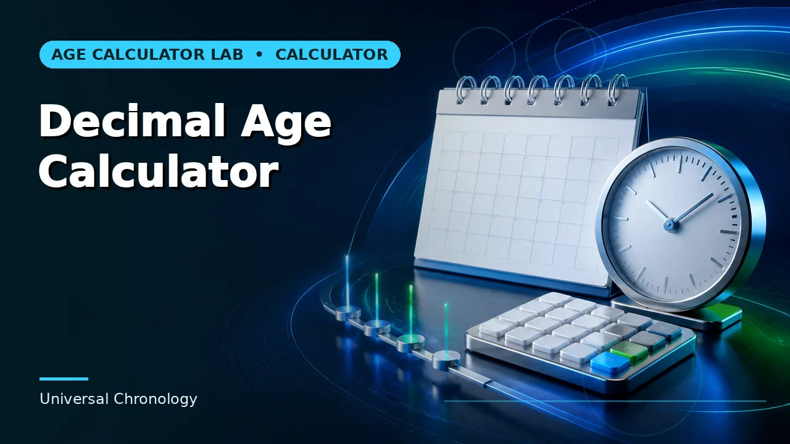

Quick answer
Use calendar age for records and anything date-sensitive. Use decimal age only when a formula or dataset explicitly asks for it, and state which year length you used.
Two answers, both correct
Calendar age counts complete years, months and days. Decimal age divides total elapsed days by an average year length. They describe the same interval and they will not agree, because one respects calendar boundaries and the other flattens them.
Neither is more accurate. Calendar age is exact about a structure; decimal age is exact about a quantity. The error is treating one as a conversion of the other, which produces figures that look precise and cannot be reproduced.
Use this guide with the right tool: Open the Age Calculator for exact chronological age in completed years, calendar months and remaining days. If the question shifts, compare it with the Decimal Age Calculator or the Age in Specific Units Calculator.
Which average year
Decimal age depends on a divisor, and there are three in common use: 365 (simple), 365.25 (Julian), and 365.2425 (Gregorian mean). Over a short span the difference is negligible; over decades it is days.
That means a decimal age is not fully specified without its convention. Two tools reporting 31.74 and 31.76 for the same person are probably both right and using different divisors. Record which one you used, or the number is not reproducible.
Where decimal age is genuinely required
Research datasets, growth-chart calculations, some clinical scoring formulas, and any statistical model that treats age as a continuous variable all want a decimal. Feeding years-months-days into a formula expecting a decimal produces nonsense.
Outside those contexts it is usually the wrong choice. A decimal age on a form, in a report or in a conversation invites misreading — 8.5 looks like it might mean eight years and five months, and often does get read that way.
Converting badly
The common error is dividing the months field by twelve and appending it: reading 8 years 6 months as 8.5. That ignores the days field entirely and assumes months are equal twelfths, which they are not. It is close enough to be plausible and wrong enough to matter in a formula.
Calculate both figures independently from the two source dates. The calendar age comes from counting units; the decimal comes from dividing total days. Deriving one from the other bakes in an approximation the original did not have.
Worked example
Substitute your own dates and follow the instructions that actually govern your situation. Where a result sits close to a cutoff, verify the underlying date and rule independently before relying on it.
Common mistakes to avoid
- Dividing months by twelve. This drops the days field and assumes equal months. Calculate the decimal from total days instead.
- Publishing a decimal without its year length. 365, 365.25 and 365.2425 give different answers. State the divisor.
- Putting a decimal age on a form. Readers interpret 8.5 as eight years five months. Use calendar age unless a formula requires otherwise.
Use the right calculator
Each of these runs in the browser, states its assumptions, and links to the neighbouring calculation when the question turns out to be a different one.


Frequently asked questions
Which divisor should I use?
Whichever the formula or dataset specifies. Where nothing specifies, 365.2425 is the Gregorian mean and the most defensible default.
Can I convert a decimal age back to years and months?
Only approximately. The calendar structure is already gone. Recalculate from the dates.
Does decimal age handle leap years?
The elapsed-day count does, exactly. The divisor is an average, which is where the convention question comes in.